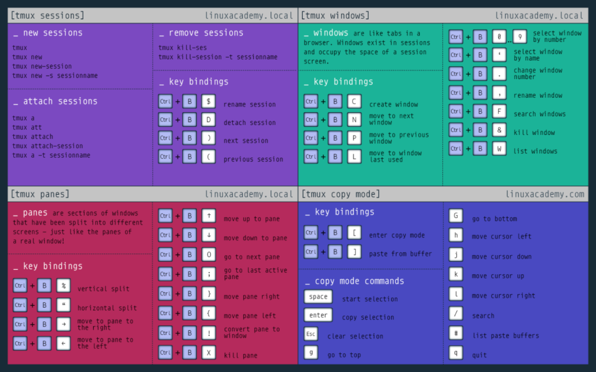

Tmux
TMUX Essentials
Installation:
apt install tmux
Sessions
Creating Sessions:
tmux
Creates a session with default name 0,1,2.....
tmux new -s <Session Name>
Creates a session with the provided name
Creating New Session Without Attaching to it:
tmux new -s <Session Name> -d
Detach Sessions:
Ctrl + b d
View Sessions (Running in Background/Detached):
Note: Once detached, we will run the following command in our local bash/zsh shell (Not in Tmux)
tmux ls
or
tmux list-sessions
Attach Session:
tmux attach -t <Session Name>
or
tmux a -t <Session Name>
Rename Session:
tmux rename-session -t <Session Name> <New Name>
Or
Ctrl + b + Shift + $
Deleting/Killing Sessions:
tmux kill-session -t <Session Name>
Note: Killing all sessions excluding a particular session using -a for all & -t to specify the excluded session.
tmux kill-session -t <Excluded Session Name> -a
Switching Between Sessions Without Detach/Attach:
This can be done by using: Ctrl + b + s
A window will appear that will list the sessions, we can use the arrow key & Enter to select the desired session
Windows
Creating New Windows: (Will be labeled 0,1,2,3.....)
Ctrl + b c
Switch Between Windows:
Ctrl + b <Window Number>
Eg. Ctrl + b 2
Cycle Between Windows:
Ctrl + b + n [Next Window]
Ctrl + b + p [Previous Windows]
The Following will list all windows and we can use direction keys to select anyone.
Ctrl + b + w
Rename Windows:
By default all windows will be named as the shell used. Eg. bash, zsh etc
Ctrl + b ,
Enter the New Name
To Dissolve a Pane into its own Window:
Ctrl + b + Shift + 1
Or
Ctrl + b + !
Join two different windows/panes back into one:
Enter into tmux prompt
Ctrl + b + Shift + ;
Or
Ctrl + b + :
Then enter the following command:
join-pane -s <Window Name/Number> [Joins a pane from the Source window to current window]
Or
join-pane -t <Window Name/Number> [Joins a pane of current window to the destination windows]
Also we can use -v & -h switch in join-pane command for vertical & horizontal joining respectivley.
Delete a Window:
Ctrl + b + Shift + 7
Or
Ctrl + b + &
Then Confirm with y
Note: It will also delete all the panes inside the window
Panes
Creating New Panes (Vertical):
Ctrl + b %
Creating New Panes (Horizontal):
Ctrl + b "
Swtich Between Panes:
Ctrl + b <Direction Keys>
Eg. Ctrl + b Up Arrow
Note: The above method of switching with arrows has certain issue which can cause cursor to be in different pane.
Alternate Swtiching
To Switch/Cycle through all the panes
Ctrl + b + o
To Switch/Cycle through most used panes
Ctrl + b + ;
Killing a Pane if it is not Responding:
Swtich to selected pane then use
Ctrl + b + x
Then Confirm with y
Managing the placement of panes:
To move the currently selected pane. In a clockwise rotation
Ctrl + b + Shift + ]
Or
Ctrl + b + }
Note: All other panes will move clockwise with the currently selected pane.
To move the currently selected pane. In a anti-clockwise rotation
Ctrl + b + Shift + [
Or
Ctrl + b + {
Note: All other panes will move anti-clockwise with the currently selected pane.
Another Way to Manage Pane Placement is using the 5 Built-in Layouts of Tmux
Ctrl + b + Esc + <1-5>
Note: The layout result depends on how many panes are currently open.
To cycle through the built-in pane layouts one at a time.
Ctrl + b + Spacebar
Note: This can also be an alternative using a clockwise or counter-clockwise option when there are only two panes open on the current tmux window.
Getting Pane Number & Size info:
Ctrl + b + q
It displays the Pane numbering & size of each pane. (The Info stays for a short time)

Swapping Panes:
For Swaping between 2 Panes, we need to use the tmux prompt.
Ctrl + b + Shift + ;
Or
Ctrl + b + :
Then in the command line, enter the following:
swap-pane -s <pane-number> -t <pane-number>
Or
swap-pane -t <pane-number> -s <pane-number>
This will swap between the 2 pane numbers.
Note: Always the pane number in the -s option will have the cursor & be selected/active by default.
Copy-Mode
Copy mode can be used to scroll up and down the page. If the text is larger than the length of the pane or window size. To start copy mode.
Ctrl + b + [
A number will show up in the top right corner of the current pane or window using copy mode. After scrolling.
Exit copy mode with the q key or Esc key.
Searching Upwards/Reverse In Copy-Mode:
Enter Copy Mode, then enter
Ctrl + r
Then enter the keyword xxxx
Press Ctrl + r again to go to next match in upwards/reverse direction.
At any match, Hit Enter to continue scrolling.
Exit Search: Esc
Searching Downwards/Fprward In Copy-Mode:
Enter Copy Mode, then enter
Ctrl + s
Then enter the keyword xxxx
Press Ctrl + s again to go to next match in downwards/forward direction.
At any match, Hit Enter to continue scrolling.
Exit Search: Esc
Copying in Copy-Mode:
It is a 4 step process -- (3 steps inside copy-mode & last 1 step in normal mode)
Step - 1: Enter Copy-Mode
Ctrl + b + [
Step - 2: Enter the Following to Start Highlighting/Selecting
Ctrl + Spacebar
Step - 3: Enter the following to copy to tmux clipboard
Alt + w
Note: After the above Copy-Mode will close & highlight/selection will disappear. But it is still there in clipboard
Step - 4: In Normal Mode (Inside any editor, say nano enter the following)
Ctrl + b + ]
Checking the Clipboard in Copy-Mode:
Ctrl + b + #
Or
Ctrl + b + Shift + 3
q to exit
Exiting
Exit Windows/Panes/Sessions (Same as bash/zsh):
exit
or
Ctrl + d
CheatSheet

Miscellaneous
Nested tmux Sessions:
Tmux doesn't allow to create of a nested tmux within a tmux unless you force it to. When running the tmux command a second time.

However, if we run tmux in another machine that we connect to in SSH, we can use nested tmux with default settings.
Note:
To Access the Deeper Tmux Session (SSH Machine):
Use Prefix + Prefix + Command
Eg. Ctrl + b + Ctrl + b + "
To Access the outer Tmux Session (My Machine)
Use Prefix + Command
Eg. Ctrl + b + "
To Change Starting Directory of new Panes:
To change the base starting directory. Must first learn about tmux prompt or command mode. The tmux prompt allows tmux sessions to run tmux commands without the tmux binary name. Useful when the terminal has been filled with other text. Enter a tmux prompt with prefix shift :
[Tmux Prompt]
Ctrl + b + Shift + ;
Or
Ctrl + b + :
Followed by the command "attach -c /path/to/new/starting/directory"
Or
"a -c /path/to/new/starting/directory"
To Add VI Style Editing in Copy Mode:
Go to [Tmux Prompt] using Ctrl + b + Shift + ; Or Ctrl + b + :
Followed by the command “setw -g mode-keys vi”
Configurations & Customization (Styling)
Tmux by default doesn't have a default configuration file. That doesn't mean you can make one.
Before crafting a custom configuration file for tmux. It might be a good idea to show all the options of the defaults.
tmux show -g
Important:
When creating the tmux configuration script it is important that. The file name is .tmux.conf and .tmux.conf is saved within the user's home directory /home/username/.tmux.conf
For Detailed Settings:
https://tryhackme.com/room/tmuxremux ----→ Oh My Tmux & Beyond